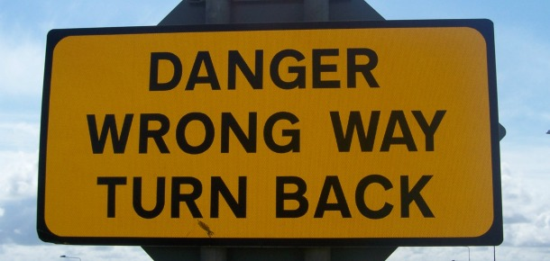
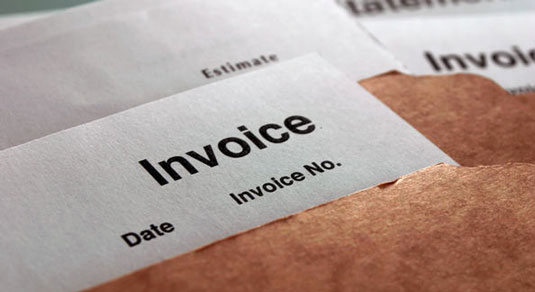

10 design mistakes that will bust your budget
We identify 10 common design pitfalls and explain how to avoid them before it costs you a packet. Not all projects are smooth sailing. Sometimes things go wrong, clients aren't happy and the time and resources you originally planned to spend on the project expands exponentially. Your expected profit becomes dramatically scaled down and you may even end up making a loss... Head some of the major problems off at the start by recognising these 10 common design project pitfalls and sidestepping them before they come back to bite you on your creative ass...
01. You said 'yes' but should have said 'no'
You don't have to - and shouldn't - just accept every commission available We've all done it. The lure of a big job can make you accept a commission without really thinking it through. Especially if you don't have any other work on. But ask yourself: are you really right for the job? Does it excite you? Sometimes it's better to say 'no' to avoid problems further down the line.
02. You didn't get anything in writing
Whether we like it or not, sometimes things go wrong. Let's call it 'creative differences' and leave it at that. Whenever you take on a new job, make sure that you get the specifics down in writing and make the client aware of how you work and what you charge for. Putting together some business terms and conditions is never a waste of your time.
03. You've got stuck in 'design creep'
"Hey, can we just add this?" On those jobs where the brief you start with isn't the brief you're looking at now, find the decision makers, get them involved and motivated, and persuade them to sign off as soon as possible. Don't do endless iterations trying to keep everyone happy.
04. You're not around to fix anything

If you walk away and leave your team to its own devices, don't expect everything to run perfectly
Don't walk out and forget the project on live day +1. Agree some performance metrics with the client, and measure them. If the project isn't performing, take action instantly. Build this into your budget.
05. Your design is high concept, not high impact
It's great that your design has swirly curls and uses that rounded new font that everyone in the studio loves. But if it doesn't change the behaviour of the target audience, you have failed the client - even if the client loves it too.
06. You forgot you'll be judged on design
Nebulous ideas like 'brand awareness' and 'eyeballs' can be useless in practice. No one cares whether or not the public can recognise a logo if they hate the brand and everything it stands for, and would rather buy from a competitor. Pick practical, useful metrics like sales, profits and cash raised.
07. You didn't agree a budget
Your client may not approve your invoice if you didn't properly agree a budget to start with
Find out up front what a client expects to spend, and give them something that fits the budget. If the client hasn't thought about the budget, they haven't thought about the project.
08. Your bluff came back to bite you
If you don’t instantly know the answer to a problem, especially when dealing with a client, it's tempting to excude an air of confidence and respond "sure" or "no problem" as a first response, thinking you'll think of something later. But if you don't, it can cause a lot of stress and backtracking further down the line. People are generally much more receptive to honestly than BS. So say: "To be honest, I'm not sure how we'll resolve this. Let's have a think and meet up tomorrow to discuss it." Don't see this as eroding your authority. By being upfront, you're actually enhancing it.
09. You took on too much work
No one wants to turn down a job. But just because you once managed to get through three projects at once, don't assume you'll always be able to. Be realistic, and build some breathing space into your schedule for when things go wrong.
10. You didn't stick up for yourself
If you're the sort of person you seeks out the path of least resistance, then get out of the design industry now. While there's no need to be rude or arrogant, if you let the client's prejudices ("I don't like that blue, let's made it red") dictate every little detail of the project then you're failing in your duty to spell out and stick to your design vision. Ultimately, you'll be judged on the end result of a project - not how agreeable you are during it. So keep that in mind throughout the process and you shouldn't go far wrong.